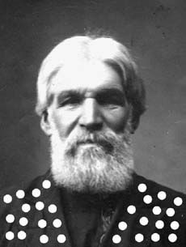

|
 | СУСАНИНЪ 04ZARAZUM!www.susanin.zarazum.ru |
| К 15-ЛЕТИЮ ПУШКИНСКОЙ-10 |
|---|
| НОВОСТИ | |
|---|---|
ПЛАВАЮЩАЯ ДАТА АХТУНГ! СЕКТА ИНСЕКТОВ! Николай Заебитлов НЕ КО 2 Руб. А.Вандик 2 ВЕЛИКИХ КУПОЛА 2 Главврачь ТРОЛЕЙБУС НАЕХАЛ НА КУРАТОРОВ Паровозик из Ромашково ЯПОНСКАЯ НЕДЕЛЯ Дай Суке Ногами ОПЯТЬ НА ДНЕ С ослов издателя ЗАГРОБНОЕ ПОБОИЩЕ Окиничев-Брониславский НАПУТСТВИЕ ДЕБИЛУ Любовь Майская | 10 ЛЕТ НАИИ НА П-10 Жан-Доменик Энвер ГЛАФлаг Автопилот НАДДАЛИ ГЭЗУ Наднепрогэз |
| ПО СРАНИЦАМ ПРЕССЫ | |
|---|---|
ЖУРДИНА ЗНАЧИТ ЖУРДЕН "Вылезти из шкафа" - раскрыть свою нетрадиционную сексуальную ориентацию.
Как доказало феминистическое учение, за громкими именами выдающихся деятелей мировой культуры обычно скрываются затюканные мужчинами дамы. За одним из Римских пап 9в. скрывалась Папесса Иоанна, за Фальконе - Мари-Анн Колло, за Роденом - Камилла Клодель, за Фрейдом - Сабина Шпильрейн. В этом жанре выдающееся открытие сделал научный сотрудник Гос. Эрмитажа Аркадий Ипполитов. Оказывается, что под именем известного московского соц-артиста Ильи Кабакова долгие годы скрывалась концептуалистка Эмилия Каабакова. Добившись всемирной известности под мужским именем, художница, наконец, решила открыться широкой публике на ретроспективной выставке в Эрмитаже. В день нападения Германии на СССР она представила выставку "Случай в музее". Ее шедевр - инсталляция "Сортир" после окончания выставки станет жемчужиной постоянной экспозиции современного искусства, открываемой Эрмитажем в Главном штабе русской армии. "СЪ" приводит фрагмент интервью, данного физическим Ильей Кабаковым корреспонденту газеты "Коммерсант" (22.06.04, с.15) МИЛЕНЕ ОРЛОВОЙ, заставляющее даже скептиков задуматься об умственной состоятельности потемкинского гения:
| ЖИЗНЬ БЕЗ ЦАРЯ Ольга Комок СЧАСТЬЯ НЕ БУДЕТ БОЛЬШЕ В.Зайцев СМЕНА КОЛЕС Ванна Ахматова |
ТАКОЙ МАЛЕНЬКИЙ ПОТЕРЯЛСЯ.
РАЗЫСКИВАЕТСЯ
малютка по имени Филиппок.Потерявшемуся на вид 6-66 лет, роста среднего, комплекция слоновья, работает в музее МЧС им. В.В.С. директором, истинный нонконформист, характер ломкий, нордический, в пороках и проказах замечен, был трезв и печален.
|
| ПАМЯТНЫЕ ДАТЫ |
|---|
491 год подвигу Сусанина
300 лет Кронштадту
200 лет Михаилу Глинке
40 лет Rolling Stones
30 лет выставки в ДК "Невский"
15 лет Пушкинской-10
10 лет Музею Новой Академии
6 лет газете "СусанинЪ"
5 лет Музею нонконформистского искусства
5 лет ГЭЗ-21
5 лет не пьет Александр Менус
| ОПРОВЕРЖЕНИЯ |
|---|
|
В предыдущий № "Съ" по вине программы "Пейджмейкер" вкралась досадная опечатка. В статье Л.Гуревич "Срезал" художнику Р.Васми приписываются слова об обрезанной крайней плоти художника А.Арефьева. Общеизвестно, что, что еще в юности Р.Васми, переодетый женщиной, рисуя голых баб в бане, отличался от остальных членов круга Арефьева крайней культурой слова и "крайняя плоть" не выговаривал.
В №50 "Съ" в дебютной поэтической публикации поэтессы Татьяны Л. вкралась опечатка. Вместо слов: "Полижи мне пипочку, Глеб Ершов" следует читать: "Полижи мне попочку или шов". Глеб Пеликанов |
| РАССКАЗЫ О КУРАТОРАХ |
|---|
|
НИХТ ФЕРШТЕЙН ПЕППЕРШТЕЙН Однажды авторитетные ленинградские искусствоведы Мазатуркины гостили в первопрестольной; в первый раз припали к сосцам Медицинской герменевтики. Сидя на кухне у Павла Пепперштейна ("Офигенная борьба кастр") они запросили чаю. "П.П. повел себя очень странно - рассказывал очевидец, - с блуждающей улыбкой он взял чайник, насыпал туда заварки и налил туда горячей воды из под крана и поставил его перед нами. Что бы это значило?", - задумался будущий ведущий специалист по либидо СПб. ИХ НРАВЫ В.Мазин, будучи влюбленным в О.Туркину однажды звонил ей из телефона-автомата. В это время в будку рвалась какая-то старушка. "Извините, Олеся, я не могу продолжать наш разговор - здесь хотят срочно повзонить какой-то бабушка" - запинаясь от смущения пробормотал Виктор. "Ударьте ее ногой в живот", - посоветовала Олеся. Виктор тут же просветлел и внезапно внес ей (Олесе) предложение. ШАГИ ПРОГРЕССА В одном из писем Ленин пишет родным в Ульяновск: "Уже три месяца живу в Петербурге. В Эрмитаже еще не был. Что-то не тянет". Такое бескультурье невозможно в наше время. Так, однажды на рубеже тысячелетий художник Т.Новиков встретил известного московского куратора И.Бакштейна, бредущего по Невскому, пораженного какой-то мыслью. "Сегодня я первый раз побывал в Эрмитаже" - признался известный куратор, комкая в руках репродукцию "Данаи". |
| ПОДВАЛ ПОЭТА |
|---|
Таня Л.
|
Олег К. |
ЛЕТО В ЧЕРЕМУШКАХ
ТРОЕ
Вырастет из пина гвин
|
|
На ярмарке-скотобойне Арт-Москва концептуализм приобретает все более живописные черты. Московский концептуализм дорос до капиталистического реализма. Итальянский куратор Б.Олива по этому поводу заметил: "Художником рождаются, галеристом становятся, куратором умирают". Рис. В.Фомичева |
| К 15-ЛЕТИЮ ПУШКИНСКОЙ-10 |
|---|